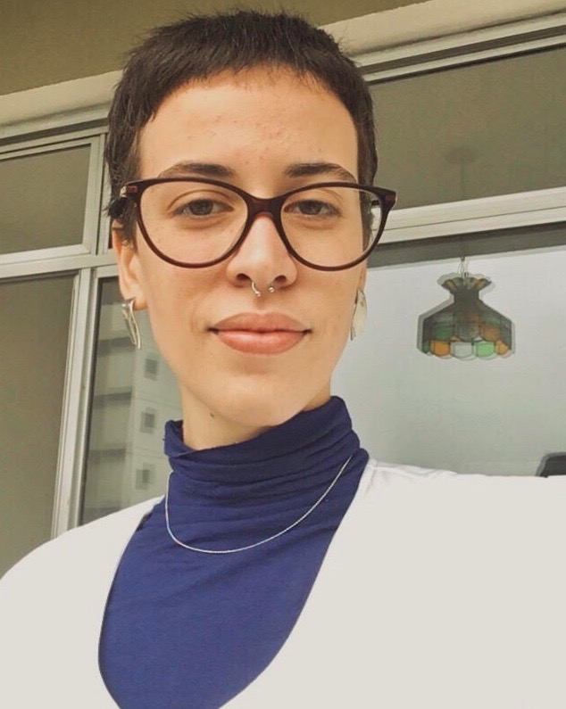

biografia
Graduanda em História da Arte pela Escola de Belas Artes da Universidade Federal do Rio de Janeiro. Atuou como monitora da disciplina História da Arte no Brasil 1, e atualmente é monitora da disciplina História das Artes Visuais 6 com atividades conjuntas em História da Arte no Brasil 3 (Departamento BAH - História e Teoria da Arte | EBA/UFRJ). Foi pesquisadora pela CNPq do grupo "Formas de Habitar o Presente" (EBA/UFRJ), onde pode realizar estudos e pesquisas em arte e sua relação com marcadores sociais da diferença, com ênfase nos estudos de gênero, sexualidade, raça e territorialidade. Atuou como arte educadora na VIII Bienal da Escola de Belas Artes da UFRJ, realizada no Parque Lage, exposição essa que pode colaborar também com textos críticos para o catálogo.
principais interesses
- história, teoria e crítica de arte;
- curadoria, exposições e museus;
- arte e educação;
- história e historiografia da arte;